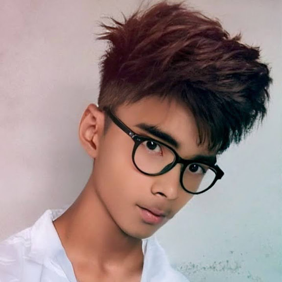

Graphic designer, video editor & Blender animator. 5 years deep in After Effects, building motion, visuals and stories frame by frame from Biratnagar, Nepal.

I'm Sushant Basnet, known online as Myster SVZ — a graphic designer and video editor with 5 years of hands-on experience in After Effects, and a 3D animator working in Blender.
I completed my +2 (Science faculty) at Arniko Awasiya College, and I'm currently in my 2nd semester at Biratnagar International College (BIC), continuing to sharpen both my academic and creative paths.
I work across English, Nepali, and Hindi, and I'm always experimenting with new compositing, motion design and 3D techniques.
Creating logos, thumbnails, posters and brand visuals with a focus on clean, eye-catching composition.
5 years of experience in After Effects — motion graphics, VFX, transitions and full video edits.
Modeling, rigging and animating 3D scenes and assets in Blender for short clips and intros.
Finished my higher secondary education in the science faculty — passed out and moved on to college.
Self-driven journey into motion graphics, video editing and 3D animation, growing the Myster SVZ brand on Instagram and YouTube.
Currently studying at BIC, second semester running, while continuing to take on design and editing work.
Follow along for edits, designs and 3D animation drops — or reach out for a project.